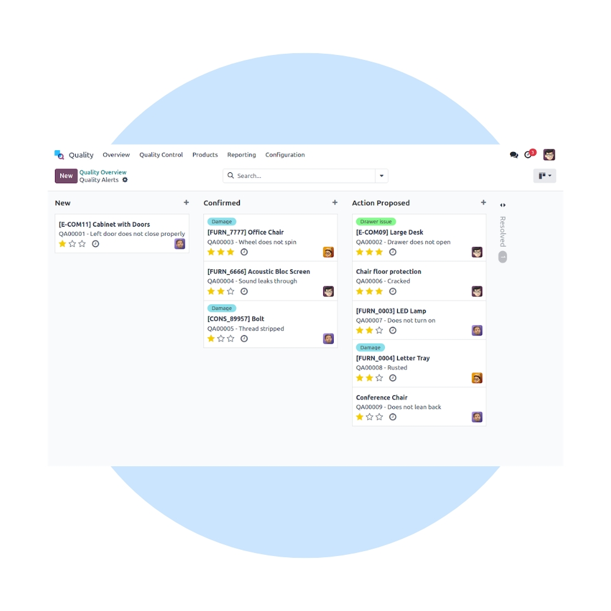
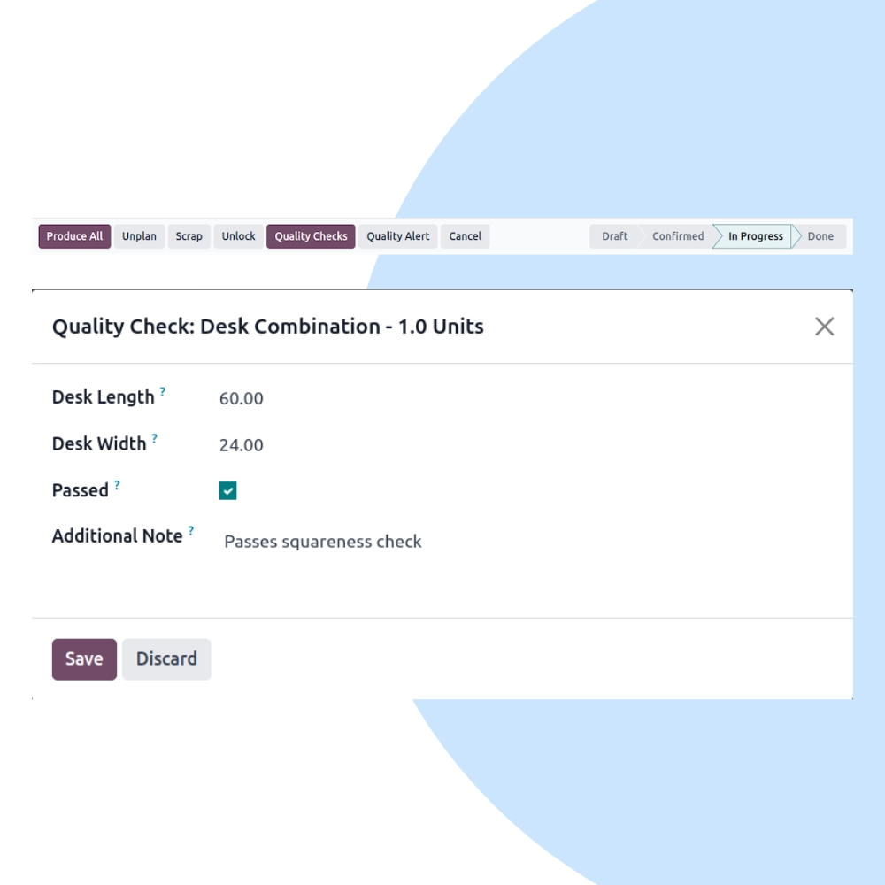
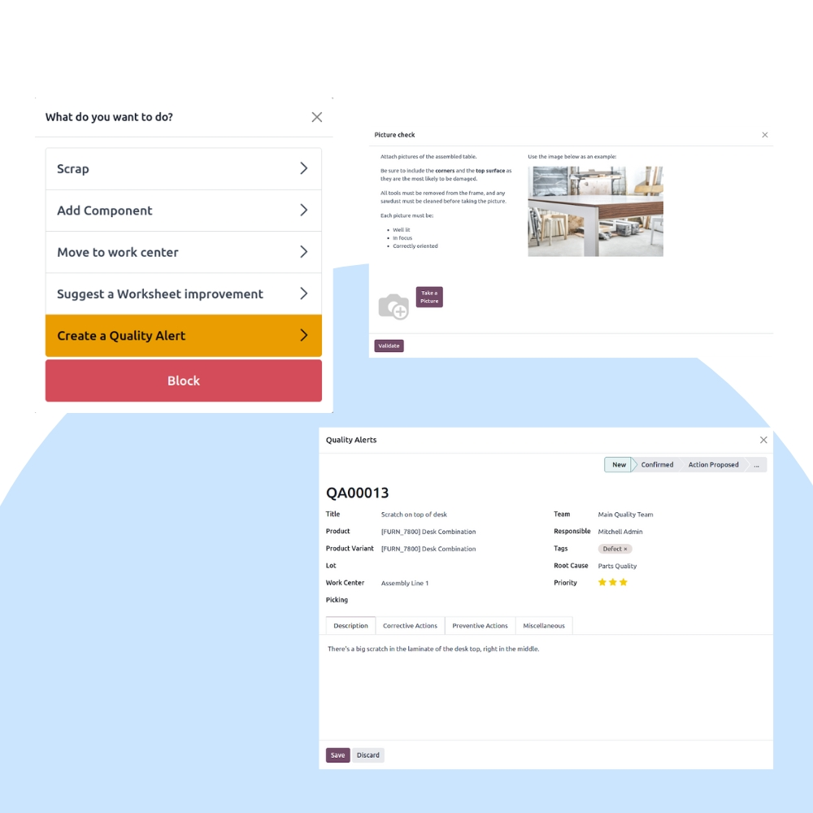

Ensure consistent product quality with Odoo Quality. We help businesses define quality checks, manage inspections, track non-conformities, and enforce compliance across manufacturing, inventory, and operations.
We configure Odoo Quality to match your inspection standards, regulatory requirements, and internal SOPs. Integrate quality checks seamlessly with Manufacturing, Inventory, Maintenance, and PLM.


Our implementation ensures consistent inspections, faster issue resolution, and complete traceability across products, batches, and processes.
Perform checks at every critical operation.
Identify, log, and resolve defects quickly.
Track issues by batch, serial, or process.
Support ISO, industry & regulatory standards.
Quality built directly into operations.
Connected with Manufacturing, PLM & Inventory.
We help you continuously improve quality performance, reduce defects, and strengthen compliance through ongoing optimization and analytics.
